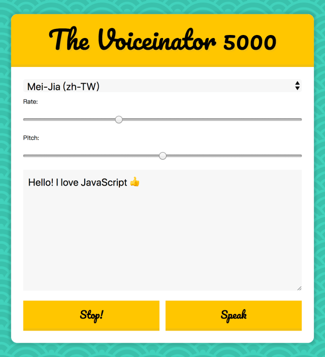

23 — Speech Synthesis

主題
使用SpeechSynthesisUtterance及speechSynthesis來使文字轉語音。
上次有做過語音轉文字的練習
這次則是要使用文字轉語音，透過介面中的輸入欄位來轉語音播放，
並可透過設定好的控制條來變更語音速率/音準。
Speech Synthesis
Github
步驟
Step1. 取得頁面元素並設置SpeechSynthesisUtterance
1
2
3
4
5
6
7
8
| const msg = new SpeechSynthesisUtterance();
let voices = [];
const voicesDropdown = document.querySelector('[name="voice"]');
const options = document.querySelectorAll('[type="range"], [name="text"]');
const speakButton = document.querySelector('#speak');
const stopButton = document.querySelector('#stop');
// 使html中的輸入欄位成為SpeechSynthesisUtterance要使用的值
msg.text = document.querySelector('[name="text"]').value
|
Step2. 設定語音播放語系選單
1
2
3
4
5
6
7
8
9
10
11
12
13
14
| // 取得語系資訊
function populateVoices() {
voices = this.getVoices();
// 將所有語系塞進下拉選單中
voicesDropdown.innerHTML = voices
// 使用filter篩選出包含zh及en的語系
.filter(voice => voice.lang.includes('zh') || voice.lang.includes('en'))
// 篩選後的array透過map把資料組成html
.map(voice => `<option value=${voice.name}>${voice.name} (${voice.lang})</option>`)
// 用join來合併且消除原本陣列的逗點
.join('');
}
// 監聽語音清單變更後進行語系清單的更新
speechSynthesis.addEventListener('voiceschanged', populateVoices);
|
Step3. 播放與功能設定
1
2
3
4
5
6
7
8
9
10
11
12
13
14
15
16
17
18
19
20
21
22
23
24
25
26
27
| // 播放切換
function toggle(starOver = true) {
speechSynthesis.cancel();
if (starOver) {
speechSynthesis.speak(msg);
}
}
// 設定選擇的發音語系
function setVoice() {
msg.voice = voices.find(voice => voice.name === this.value);
toggle();
}
// 設定速率跟音準
function setOption() {
// 傳入的變數名稱與SpeechSynthesisUtterance本身的物件相同
// 所以可以透過這種方式來直接用
msg[this.name] = this.value;
toggle();
}
// 監聽語系選單，選擇後切換語系
voicesDropdown.addEventListener('change', setVoice);
// 監聽速率跟音準控制條，移動後設定
options.forEach(option => option.addEventListener('change', setOption));
// 播放按鈕
speakButton.addEventListener('click', toggle);
// 停止按鈕
stopButton.addEventListener('click', () => toggle(false));
|
語法&備註
SpeechSynthesisUtterance
可以設置語音服務應讀取的文字內容及播放的細節(語系、速率、音量..等屬性)
MDN-Element.getBoundingClientRect
SpeechSynthesis
執行語音服務的主要功能，包含了播放、暫停..等屬性
MDN-SpeechSynthesis